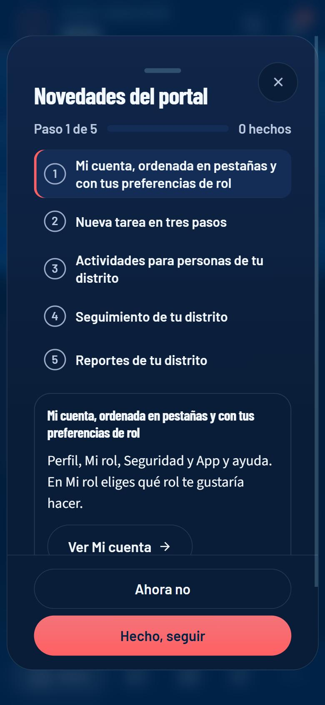
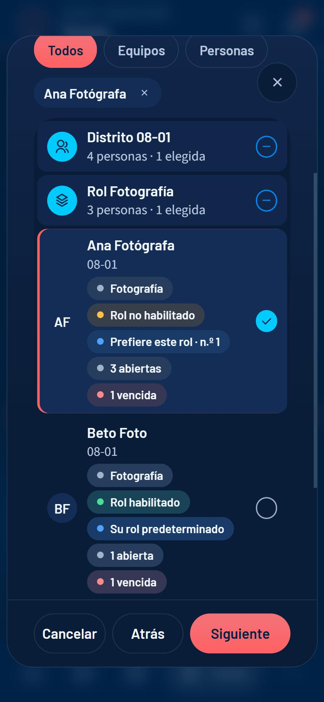
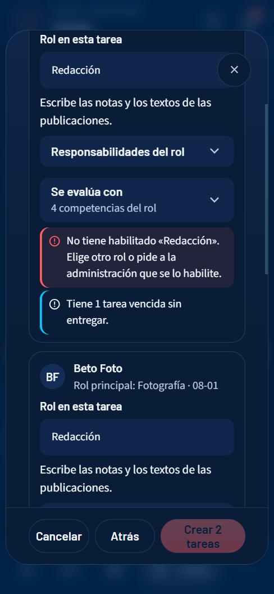
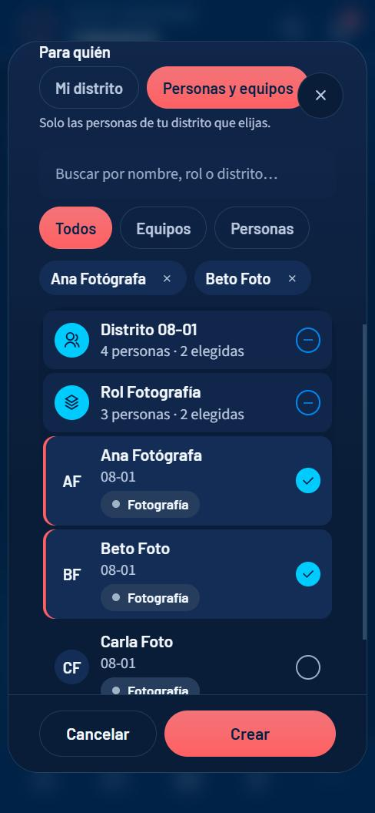
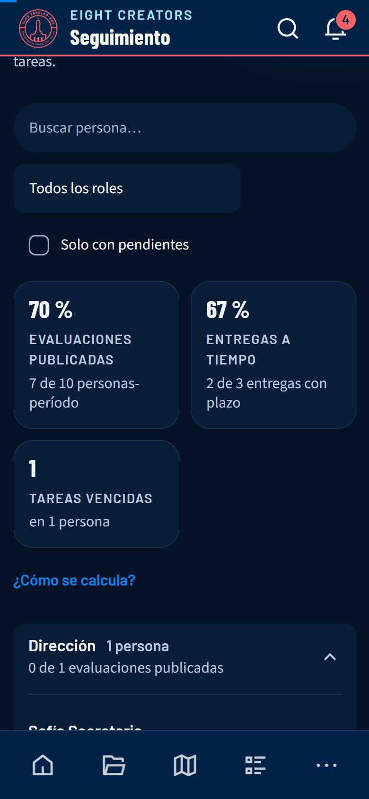
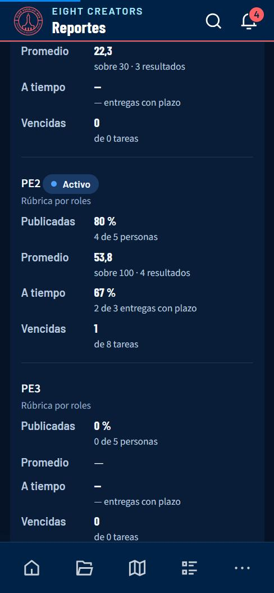

EIGHT CREATORS LABs · CELIDER 08 Santiago
Manual para secretarías de distrito
Cómo usar el portal si eres Secretario o Secretaria
Además de todo lo que ve un miembro, tienes dos herramientas para tu distrito: ver a su gente y asignar y revisar tareas. Este manual explica las dos y lo que cambia en el resto.
Las capturas son del entorno de pruebas del portal con datos de ejemplo (nombres y cifras inventados). Si lees este manual en computadora verás las capturas de computadora; en el celular, las de celular.
1Entrar y moverte por el portal
La dirección del portal es eight-coms.vercel.app. Funciona en cualquier navegador moderno, en computadora y en celular.
Crear tu cuenta
- Abre el portal y toca Crear cuenta.
- Escribe tu nombre, tu correo y una contraseña. La barra de seguridad te dice si es débil o fuerte.
- Revisa tu correo y pulsa el enlace de Confirmar mi correo. Si no llega, mira en «Spam».
- Espera la aprobación de la administración: hasta entonces, al entrar verás un aviso de que tu acceso está pendiente. Cuando te aprueban, te llega un correo y ya puedes entrar.
Iniciar sesión y recuperar la contraseña
- En Entrar escribe tu correo y tu contraseña.
- Si la olvidaste, toca Olvidé mi contraseña: te enviamos un código de verificación de 6 cifras. Escríbelo y elige la nueva clave.
Cómo está organizado
En computadora
El menú vertical azul de la izquierda lleva a cada sección. Arriba tienes Buscar (atajo Ctrl + K) para saltar a una persona o sección. Abajo, tu nombre abre Mi cuenta, y los iconos sirven para cambiar el tema (claro/oscuro) y salir. El botón Avisos muestra cuántos avisos tienes sin leer.
En celular
Arriba hay una cabecera con el nombre de la pantalla, la lupa (buscar) y la campana (avisos). Abajo, una barra de iconos: solo el destino en el que estás muestra su nombre; los demás son solo icono. El último botón (Más o Cuenta) abre un panel con el resto de secciones, tu cuenta, el tema y Cerrar sesión. Ese panel se cierra con la X, tocando fuera o arrastrando la rayita de arriba hacia abajo.
Instalar el portal como una app
Puedes tenerlo en la pantalla de inicio de tu celular, con su icono, sin la barra del navegador.
En computadora
En Chrome o Edge, usa el icono de instalar de la barra de direcciones, o el menú ⋮ → «Instalar EIGHT CREATORS LABs».
En celular
Android (Chrome): abre Mi cuenta → Instalar en tu celular y acepta. Si no aparece el cuadro, menú ⋮ → «Instalar app». iPhone (solo Safari): toca el botón Compartir (el cuadro con la flecha hacia arriba) → Añadir a pantalla de inicio. En iPhone, Chrome y otros navegadores no pueden instalarla.
2Bienvenida y novedades
Hay dos recorridos, según tu caso, y los dos se abren solos una vez: la bienvenida si llegaste ahora y las novedades si ya usabas el portal.
Si llegaste ahora: la bienvenida
Es una guía de cinco pasos para secretarías: conocer tu rol, poner tu foto, conocer a tu distrito, asignar tu primera tarea y seguir a tu distrito. Cada paso te lleva a la pantalla donde se hace y tu avance queda guardado.
- Toca Hecho, seguir en cada paso, o Ahora no para dejarla a medias.
- En Inicio queda la tarjeta Primeros pasos con tu avance y Continuar.
- Puedes repasarla desde Mi cuenta → App → Bienvenida.
Si ya usabas el portal: las novedades
Cinco pasos con lo que cambió para ti: Mi cuenta en pestañas y tus preferencias de rol, Nueva tarea en tres pasos, actividades para personas de tu distrito, Seguimiento y Reportes de tu distrito. Cada paso tiene un botón que te lleva a la pantalla.

En los dos casos tu avance queda guardado y ves la tarjeta Primeros pasos o Novedades en Inicio hasta que termines.
3Inicio y tu espacio personal
Inicio, Mi perfil, Calendario y Entregas funcionan como en el manual del miembro (consulta ese manual para el detalle de la rúbrica, los estados de tareas y el calendario). En Inicio, además, hay un bloque con el estado de tu distrito.

En Mi cuenta también eliges tus preferencias de rol, igual que un miembro (ver su manual).
4Distrito: tu gente
Tiene cuatro pestañas internas: Resumen, Personas, Estadísticas y Ranking de distritos.

- Abre Distrito y elige el período arriba (PE1, PE2…).
- Resumen es lo primero que ves: tu posición entre los distritos y tu promedio sobre 28, un bloque Qué falta (por ejemplo, enviar las estadísticas de Instagram del período, con un botón directo) y tu evolución período por período con las cuatro competencias. Los otros distritos son confidenciales: ves solo el tuyo.
- En Personas ves los indicadores del distrito (personas, promedio individual, tu posición, el general más alto) y una tarjeta por persona con su nota. En los períodos nuevos, cada tarjeta indica «N por revisar» y «N vencidas».
- Toca una tarjeta para abrir el perfil de esa persona en un panel (en el celular, una hoja desde abajo). Ahí ves sus pestañas Resumen, Criterios, Tareas, Períodos y Evolución, igual que ella.
- En Estadísticas subes, para el período elegido, las cifras de Instagram de la cuenta de tu distrito (visualizaciones, cuentas alcanzadas, visitas al perfil, seguidores netos y los porcentajes de publicaciones, historias y reels) y adjuntas una captura de pantalla como prueba. La captura se reduce sola antes de enviarse. Si otra secretaría de tu distrito ya las envió, las ves y puedes corregirlas mientras el período siga abierto. La administración las usa para evaluar al distrito.
- En Ranking de distritos comparas los distritos del equipo.
5Tareas: asignar y revisar
Aquí asignas trabajo a las personas de tu distrito y revisas lo que entregan. Tus propias tareas están en Entregas.

Asignar una tarea
La asignación tiene tres pasos, para decidir con los datos delante: Qué, Quién y Rol y resumen.
- Abre Tareas y toca + Nueva tarea (o, desde el perfil de una persona, Nueva tarea; o desde el calendario, en un día).
- Qué: título, qué se espera, fecha límite, prioridad y, si hay varios períodos de rúbrica por roles, el período. Opcionalmente, una actividad del calendario y el rol para el que es el trabajo.
- Quién: busca por nombre, rol o distrito y marca personas sueltas o un equipo entero (por rol). Cada persona muestra su rol, si tiene habilitado el rol elegido, si lo prefiere y cuánta carga tiene (tareas abiertas y vencidas).
- Rol y resumen: eliges un rol por persona; al elegirlo ves sus responsabilidades y con qué competencias se evalúa. Marca qué competencias evidencia la tarea (opcional; Sugerir las del rol marca las principales) y revisa el resumen.
- Toca Crear N tareas. Cada persona recibe un aviso (y un correo) con su tarea y su fecha.


Los avisos antes de crear
| Aviso | Qué pasa |
|---|---|
| Rol no habilitado (en rojo) | La persona no tiene habilitado ese rol: no puedes crear la tarea. Elige otro rol o pide a la administración que se lo habilite. (La base de datos también lo impide.) |
| Ya tiene una tarea abierta con el mismo título | Aviso: puede ser un duplicado. Si es a propósito, marca «Entiendo los avisos…». |
| Carga alta (5 o más tareas abiertas) o tareas vencidas | Aviso: ya tiene mucho trabajo. Puedes crearla igual. |
| No participa en el período · fecha límite ya pasada | Aviso: la tarea no contaría en el resumen, o nacería vencida. |
Revisar una entrega
- Entra a Tareas y usa el filtro Por revisar (muestra el número).
- Pulsa Ver entrega para leer el enlace o la nota.
- Si está bien, Aprobar: es obligatorio ponerle puntos de 0 a 10. Los puntos son un dato para quien evalúa; no entran en ninguna fórmula.
- Si hay que corregir, Devolver y escribe la observación (obligatoria). La persona recibe un aviso con tu observación.
| Botón | Para qué |
|---|---|
| Editar | Cambiar el título, la descripción o la prioridad de una tarea que asignaste. |
| Mover el plazo | Cambia la fecha límite con un motivo (mínimo 5 caracteres). La fecha original queda registrada y la persona recibe un aviso. |
| Historial | Cada cambio: quién, qué y cuándo. No se puede borrar. |
| Filtro por persona | Ver solo las tareas de una persona. |
6Crear actividades para tu distrito
Desde Calendario, toca un día y Nueva actividad. (Para editarla o eliminarla, ábrela desde el panel del día.)
- Escribe el título, una descripción si quieres, el tipo (Entrega, Jornada, Capacitación, Reunión…; da el color en el calendario) y las fechas (Hasta solo si dura varios días).
- En Para quién elige Mi distrito (la ven todas las personas de tu distrito) o Personas y equipos (solo las que elijas).
- Con Personas y equipos aparece el mismo selector de las tareas: busca, filtra por Todos / Equipos / Personas y marca personas o un equipo entero. Debajo, una frase te dice a cuántas personas se avisará.
- Guarda. Quienes quedan como destinatarias reciben un aviso (y otro la víspera); nadie más la ve.

7Seguimiento: tu distrito en todos los períodos
Seguimiento muestra a las personas de tu distrito agrupadas por rol, con una columna por período: el estado de su evaluación (publicada o sin publicar), su resultado con su nivel y los hechos de sus tareas.

- Indicadores de arriba: evaluaciones publicadas (personas con evaluación publicada ÷ personas que participan, en los períodos ya en juego), entregas a tiempo (entregadas dentro del plazo ÷ entregadas con plazo) y tareas vencidas. Cada cifra dice «N de M».
- Filtros: buscar a una persona, filtrar por rol y Solo con pendientes (evaluación sin publicar o tareas vencidas).
- Cada rol es un grupo que se pliega. Toca el nombre de una persona para abrir su perfil.
- Los resultados de la rúbrica por roles (sobre 100) y de la clásica (otra escala) se muestran por separado y no se promedian entre sí.
8Reportes de tu distrito
Reportes (en Más en el celular) reúne dos cortes de tu distrito para llevar a una reunión:

- Entre períodos: por cada período, evaluaciones publicadas («4 de 5 personas»), promedio, entregas a tiempo («2 de 3 entregas con plazo») y tareas vencidas; y el promedio por rol de un período a otro.
- Por actividad: las tareas vinculadas a cada actividad: entregadas, a tiempo, aprobadas, vencidas y puntos promedio.
- Abre Reportes.
- Usa CSV por período o CSV por actividad para llevar el cuadro a una planilla (numerador y denominador salen en columnas separadas).
- Usa Descargar PDF para imprimir la hoja con el tema claro.
Al final de la hoja, «Cómo se calcula» explica cada cifra. Cuando un denominador es 0 se muestra «—», nunca 0 %.
9Avisos (la campana)
Todo lo que te llega por correo también aparece en la campana, con su estado de leído / sin leer. Es la misma información: no se inventan avisos aparte.
- Toca la campana 🔔 de la cabecera (en computadora: Avisos en el menú de la izquierda). Si tienes avisos sin leer, verás un número en rojo.
- Se abre el panel Avisos: agrupados en Hoy / Ayer / Esta semana / Antes, con un icono por categoría (tareas, evaluaciones, actividades, accesos) y cuánto hace que ocurrieron. Los sin leer tienen fondo tenue, una barra a la izquierda y el título en negrita.
- Toca un aviso: se marca como leído y te lleva a la sección donde se resuelve (por ejemplo, una tarea devuelta te lleva a Entregas).
- Usa Sin leer para ver solo los pendientes y Marcar todo para dejarlos todos como leídos. Ver avisos anteriores carga más.

| Si ves… | Significa |
|---|---|
| Nueva tarea · Cambió el plazo | Te asignaron una tarea a ti, o se movió su plazo. |
| «Fulana entregó: …» | Una persona de tu distrito entregó y espera tu revisión (Tareas → Por revisar). |
| Tarea bloqueada | Alguien de tu distrito marcó que está esperando algo; mientras tanto no cuenta como atrasada. |
| Vence / Tarea vencida · Te devolvieron · Aprobaron | Lo mismo que para cualquier persona, sobre tus propias tareas. |
| Tu evaluación está publicada | Tu resultado está en Mi perfil. |
| Nueva actividad · Mañana: … | Una actividad del equipo o de tu distrito. |
10Mi cuenta
Es tu espacio personal. Se abre con tu nombre (computadora) o desde Más → tu nombre (celular). Arriba están tu foto, tu nombre y tus etiquetas (tipo de acceso y distrito); debajo, cuatro pestañas para que veas una cosa a la vez. El portal recuerda la última que usaste.
| Pestaña | Qué hay |
|---|---|
| Perfil | Tu nombre (con Guardar), tu correo, tu tipo de acceso y tu distrito (estos tres los asigna la administración), y Tu tarjeta: el fondo de tu perfil, elegido entre los siete patrones de la marca. |
| Mi rol | Tu rol principal con sus responsabilidades y tus preferencias de rol (no aparece para la administración, que no se evalúa). |
| Seguridad | Cambiar la contraseña: mínimo 8 caracteres, distinta de la actual. |
| App | El tema (claro u oscuro), instalar el portal en tu celular, la bienvenida o las novedades, la ayuda y Cerrar sesión. |
- Cambiar foto: elige cualquier imagen del teléfono o la computadora; no importa su tamaño. El portal la recorta en cuadrado y la reduce solo (queda ligera, de pocos KB).
- Perfil → Nombre: escríbelo y toca Guardar.
- Perfil → Tu tarjeta: elige un fondo o Auto. Lo ven también quienes pueden abrir tu perfil (tu secretaría y la administración).
- Seguridad: Nueva contraseña y Repite la contraseña → Cambiar contraseña.
- App: Tema, Instalar en tu celular (ver «Entrar y moverte») y Cerrar sesión.

Correo, tipo de acceso y distrito aparecen en «Tus datos» solo para que los veas: los asigna la administración.
11Próximamente
Estas mejoras están en camino. Mientras llegan, cada una tiene su alternativa:
- Pedir que habiliten un rol a una persona. Próximamente podrás proponérselo a la administración desde el portal. Por ahora, avísale y ella lo marca en Personas → Gestión.
- Reporte completo de evaluaciones de tu distrito (ranking, detalle por persona y por competencia). Próximamente. Mientras tanto tienes Seguimiento y los dos cuadros de Reportes; el reporte completo se lo puedes pedir a la administración.
- Roles dentro de una actividad. Próximamente. Por ahora una actividad lleva personas destinatarias y cada tarea lleva su rol.
Lo que no está en esta lista es porque así está pensado: por ejemplo, puntuar la rúbrica la hace la administración y cada secretaría ve solo su distrito.
12Permisos y límites
Lo que puedes y no puedes hacer con este tipo de cuenta. Los permisos los decide la base de datos, no la pantalla: si un botón no aparece, es porque tu cuenta no puede hacerlo.
| Acción | Con tu cuenta |
|---|---|
| Lo mismo que un miembro: tu perfil, tus entregas, calendario, avisos y cuenta | Sí |
| Ver los perfiles de las personas de tu distrito | Sí, solo de tu distrito |
| Ver el ranking de distritos | Sí |
| Asignar tareas a las personas de tu distrito, con el rol de cada una | Sí, solo con un rol que la persona tenga habilitado |
| Revisar entregas: aprobar (con puntos) o devolver (con observación) | Sí, solo las de tu distrito |
| Aprobar tus propias tareas | No: no se aprueban a sí mismas |
| Cambiar la fecha límite de una tarea que asignaste | Sí, con un motivo (la persona recibe un aviso) |
| Evaluar (puntuar la rúbrica) | No: lo hace la administración |
| Crear actividades para tu distrito o para personas de tu distrito | Sí |
| Crear actividades para todo el equipo o para otro distrito | No: las crea la administración |
| Ver el seguimiento de tu distrito en todos los períodos | Sí, solo de tu distrito |
| Ver el reporte de tu distrito entre períodos y por actividad (con exportación) | Sí, solo de tu distrito |
| Generar el reporte completo de evaluaciones (ranking, detalle por persona) | No: lo genera la administración |
| Cambiar roles, roles habilitados, distritos o accesos | No |